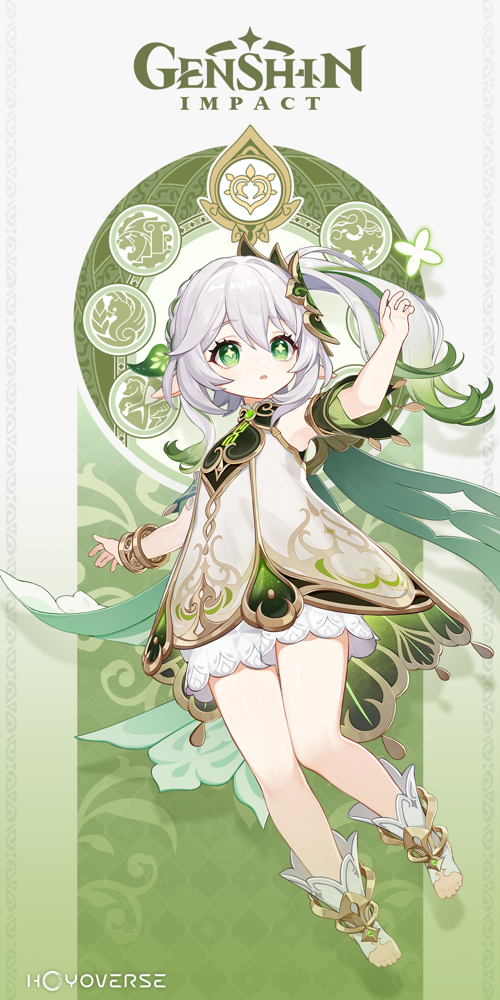

Ogłoszenie postaci
Witajcie podróżnicy~
Postacią która została dziś ogłaszona jest nie kto inny jak Lesser Lord Kusanali - Nahida!
Nahida w głębi serca wie, że musi się uczyć i dorastać tak szybko, jak tylko możliwe, aby stawić czoła zagrożeniom z najokropniejszych zakątków świata. To jej nieunikniony obowiązek.

Patch 3.2 tuż za rogiem
Tajny projekt, który obejmuje cały wysiłek Akademiya's Six Darshans, zbliża się do decydującego, końcowego etapu. Przy tak wielu zainwestowanych wysiłkach, czasie i zasobach, z pewnością przyniesie to ogromne korzyści. Jednak nie do nich należy decyzja, czy wynik spełnił ich oczekiwania...
Podgląd wersji 3.2